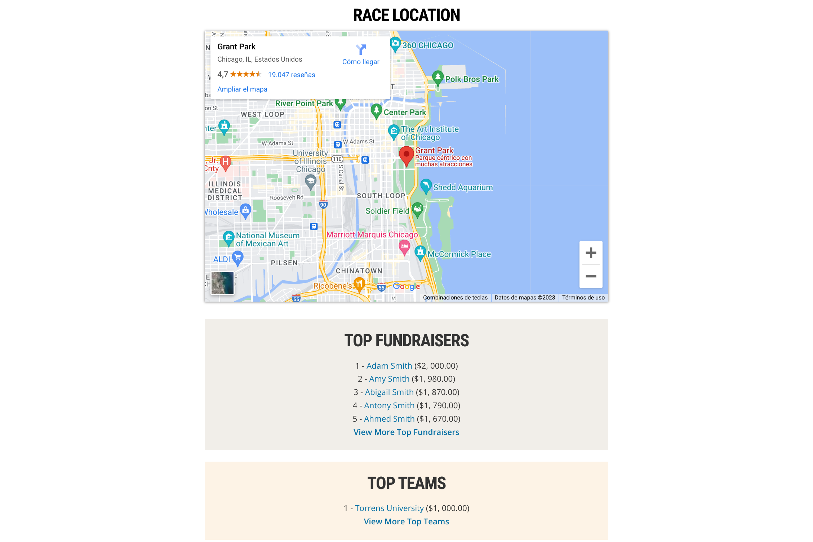

WWF Event Page
Summary
This project was suggested to me by a friend currently living in Australia and doing a Master's degree related to programming. He sent me this project from his course as a way to practice and test my current frontend developer skills, as it had for him.
The aim of the project was to mimic a real webpage from a non-profit organisation which advertises a charity event, plus adhere to some extra requirements laid out by the course professor which were designed to test certain skills. To not overcomplicate the matter, I built the same WWF event webpage as my friend did, which advertises and details WWF's participation in the Chicago marathon 2023.
For this project I imagined that the WWF organisation had asked me personally to design this webpage for them. I used the project brief as my guide and the live website as my design template and then built everything from scratch. I am very satisfied with the final result and its similarity to the original design, and indeed I think the extra add-ons set out by the requirements add a nice touch to the page - although at times this meant deviating from the original design.
- HTML5
- CSS
- Responsive Web Design
- Javascript (ES6+)
My Design

Original Design

Building the project üõ†Ô∏è
In my experience the navigation/header area is one of the trickiest parts of a page to build, and this project was no different. Here there are a large amount of items which all sit together, and therefore lots of moving parts to resize and reorganise at different screen widths. In the original design there is one layout for smaller screens and then another one for larger screens another. To mimic this, I built built two separate nav areas for this webpage in the HTML document, turning the relevant one on or off depending on the screen size via media queries.
Responsive Nav Area

One of the project requirements was to have at least 6 images displayed on the webpage. The original website doesn't have 6 images displayed, so I decided that the best way to include 6 images without ruining the original design too much would be to include an image carousel (slider). At the same time, I could take advantage of the extra 'real estate' on my webpage provided by the picture areas to include key race information - something I thought a real client might appreciate.
This minimum image requirement was also present in another project in which I also used an image carousel. I could have just copied that one and reused it, however, I wanted to improve upon the last design and get more practice with Javascript, and so I found this useful video tutorial which helped guide me through building an image slider that also includes clickable dots at the bottom of the image.
Image Carousel

Once I had built the top half of the webpage, the bottom half was not too difficult. I kept nearly all the content within a wrapper container so that it did not spread too wide and look ugly. Additionally, I added a Youtube video and a Google maps link which was again one of the project requirements and which differentiated from the original design, but which I think they work really well. I can easily see the real website including such content to help their users learn more about the event. Lastly, and to my surprise, I found embedding these two things really easy due to in-built website embedding features on both Youtube videos and Google maps.
Bottom Part of Page
Project Reflection ü§î
This project was a big confidence booster in terms of my web-page skills and my abilities with CSS and responsive web-design - I built a webpage which closely resembles a professional website from scratch and by myself! This project has given me the belief now that I really am able to build beautiful, functional, and responsive websites, which has only invigorated me to do more and get better.
However, there's still a lot to improve on and one of those things is Javascript. In order to create the image carousel, the countdown timer, and the drop-down menu I needed help from tutorials or websites which is frustrating. I would like to get to a good enough level where I am able to build most of these things by myself, with only a little help and correction from others. However, seeing what can be done with Javascript is quite exciting and leaves me feeling more motivated to keep going and learn more!
Lastly, like my other WWF-related project, I found this project's requirement of using HTML media queries within the <head> tag to be a bit strange, especially since all my online learning had indicated that the industry-standard way of using media queries is within a CSS file. Although it was good to practice this other method of creating responsive websites, I quickly discoverd I didn't like it because it requires several, individual css files. This resulted in masses of code duplication, lots of manual adding and removing of CSS code, and often left me confused as I was trying to manage lots of similar code across 3 documents.